Du kannst eine Nachricht aufnehmen und sie deinen Wii-Freunden senden. Außerdem kannst du ein Foto und ein Mii an deine Nachricht heften. Während eines Gesprächs kannst du allerdings keine Nachrichten aufnehmen.
Selbst Wii-Freunde, die nicht über Wii Speak verfügen, können deine Nachrichten über ihre Wii-Pinnwand erhalten. |
-
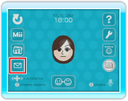Wähle im Gesprächsraum oder in der Lobby
 , um den Nachrichten-bildschirm aufzurufen. , um den Nachrichten-bildschirm aufzurufen.
-
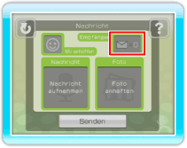Wähle . Eine Liste deiner Wii-Freunde wird daraufhin angezeigt.
-
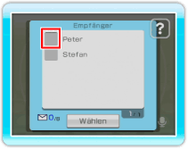
Zeige auf das Feld neben dem Namen des Wii-Freundes, der deine Nachricht erhalten soll, um ein  einzufügen. einzufügen.
Du kannst deine Nachricht an bis zu acht Wii-Freunde gleichzeitig senden.
Um das Symbol zu entfernen, zeige darauf und drücke erneut  . .
Bestätige anschließend mit WÄHLEN, um zum Nachrichtenbildschirm zurückzukehren.
-
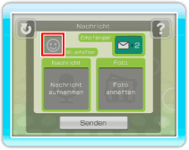
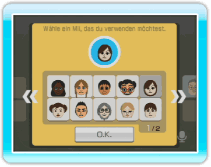
Wenn du ein Mii anheften möchtest, wähle Mii ANHEFTEN und wähle anschließend das gewünschte Mii.
-
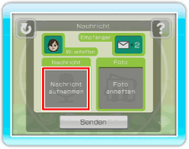
Wähle im Nachrichten-bildschirm die Option NACHRICHT AUFNEHMEN, um deine Stimme aufzunehmen.
-
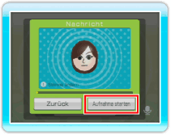
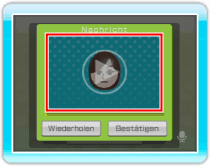
Wähle AUFNAHME STARTEN und sprich deine Nachricht klar und deutlich in das Mikrofon. Die maximale Aufnahmezeit beträgt 10 Sekunden.
Wenn du vor der Aufnahme der Nachricht  drückst, kannst du deine Stimme ändern. Du kannst dir die Aufnahme anhören, sobald du sie abgeschlossen hast. drückst, kannst du deine Stimme ändern. Du kannst dir die Aufnahme anhören, sobald du sie abgeschlossen hast.
-
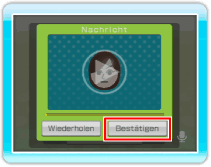
Wähle BESTÄTIGEN, um zum Nachrichten-bildschirm zurückzukehren. Die Option NACHRICHT AUFNEHMEN wird in einer anderen Farbe dargestellt, um darauf hinzuweisen, dass eine Aufnahme an die Nachricht gehängt ist.
-
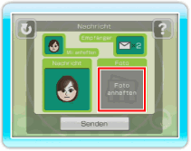
Um ein Foto mit der Nachricht zu senden, wähle die Option FOTO ANHEFTEN.
Befolge die Schritte 2 und 3 im Abschnitt „14. Zeigen von Fotos“, in denen du eine Erklärung findest, wie ein Foto gewählt wird. Bestätige anschließend mit WÄHLEN.
-
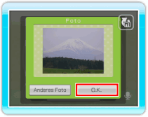
Wähle O.K., um zum Nachrichtenbildschirm zurückzukehren. Das Foto wird nun an deine Nachricht geheftet.
- 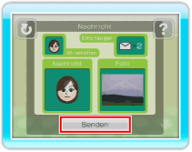Wenn deine Nachricht fertig ist, wähle SENDEN. Es kann einige Zeit in Anspruch nehmen, bevor deine Nachricht angekommen ist.
Hinweis: Du kannst jederzeit die Anzahl der Empfänger ändern, ein anderes Foto oder Mii anheften oder deine Nachricht erneut aufnehmen, bevor du sie sendest.
Wenn du eine Nachricht erhalten hast, blinkt das Wii-Pinnwand-Symbol im Wii-Menü. In den Wii-SYSTEMEINSTELLUNGEN kannst du zudem festlegen, dass der Disc-Schacht deiner Wii-Konsole blinkt, wenn du eine neue Nachricht erhältst. Weitere Informationen hierzu findest du in der „Wii-Bedienungsanleitung – Kanäle und Einstellungen“.
-
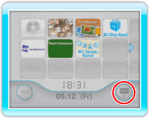Zeige im Wii-Menü auf das Wii-Pinnwand-Symbol und drücke . Die Wii-Pinnwand wird daraufhin angezeigt.
-
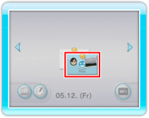
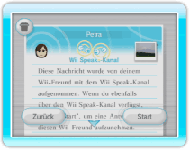
Wähle die Nachricht, die du hören möchtest. Die Wiedergabe der Nachricht beginnt sofort. Wenn du die Nachricht erneut hören möchtest, wähle ZURÜCK, um zurück zur Wii-Pinnwand zu gelangen, und öffne sie noch einmal.
Wähle START, um den Wii Speak-Kanal zu starten und erstelle eine Antwort.
Um ein Foto in der Nachricht anzuzeigen, zeige darauf und drücke .
Hinweis: Verfügt der Empfänger nicht über den Wii Speak-Kanal, erscheint an Stelle von START die Option ANTWORTEN.
Wenn der Speicherplatz der Wii-Pinnwand belegt ist, kannst du deine Nachrichten auch auf einer SD Card speichern. Weitere Informationen hierzu findest du in der „Wii-Bedienungsanleitung – Kanäle und Einstellungen“.
| |
|